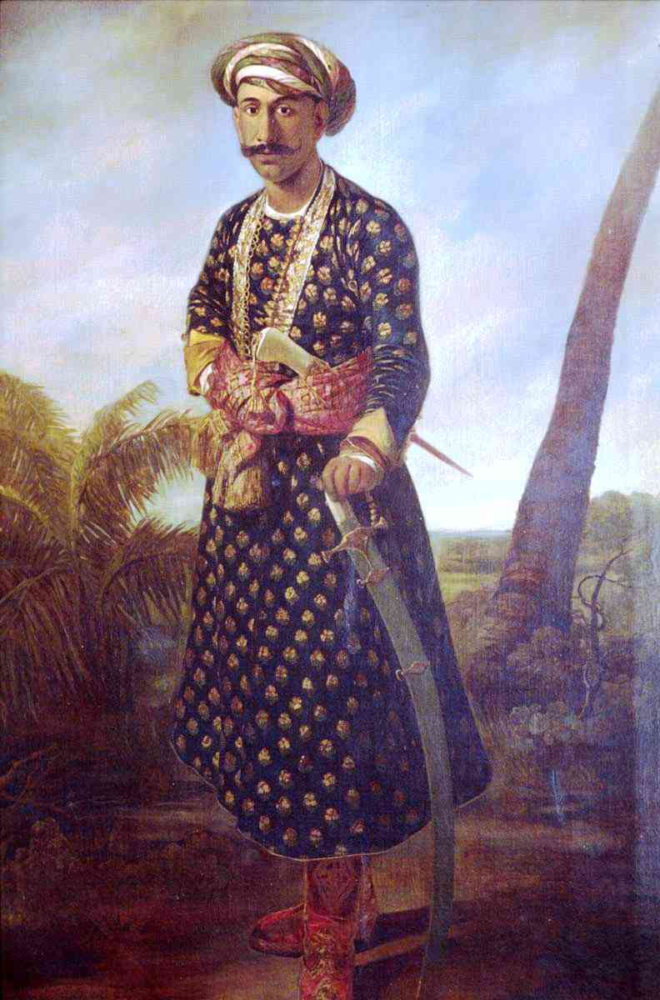

Early Resistance (1757-1856)
The initial struggle against British expansion in India
British Arrival and Expansion
The British East India Company first arrived in India in 1608 as traders seeking spices and textiles. Over the next century and a half, the Company gradually transformed from a trading entity to a territorial power, using military strength, diplomatic intrigue, and economic leverage to expand its control.
The pivotal moment came in 1757 with the Battle of Plassey, where Robert Clive defeated the Nawab of Bengal, Siraj ud-Daulah, establishing Company rule in Bengal and beginning the systematic expansion of British control across the subcontinent.
The Company's rule was characterized by exploitative economic policies, including high taxation, forced cultivation of cash crops, and policies that systematically destroyed local industries, leading to widespread poverty and recurring famines.
Early Resistance Movements
As British control expanded, various Indian rulers, communities, and individuals rose in resistance. These early struggles laid the groundwork for the larger independence movement that would follow.
1766-1799
Anglo-Mysore Wars
Series of four wars fought between the British East India Company and the Kingdom of Mysore. Led by Hyder Ali and later his son Tipu Sultan, Mysore offered significant resistance to British expansion in South India.
"It is better to live like a tiger for a day than like a sheep for a hundred years." - Attributed to Tipu Sultan
1767-1799
Tipu Sultan's Resistance
Tipu Sultan, known as the "Tiger of Mysore," was one of the most formidable opponents of British expansion. He implemented advanced military technologies, sought alliances with France, and introduced progressive administrative reforms in his kingdom.
Tipu Sultan was eventually defeated and killed during the Fourth Anglo-Mysore War in 1799, ending the most significant early challenge to British power in South India.

1775-1782
First Anglo-Maratha War
The Maratha Confederacy, a powerful Hindu confederation in western India, engaged in the first of what would become three wars with the British. The Marathas initially succeeded in checking British expansion, culminating in the Treaty of Salbai.
1803-1805
Second Anglo-Maratha War
British victories led to significant territorial gains in central India and diminished Maratha power.
1817-1818
Third Anglo-Maratha War
The final conflict resulted in the complete dismantling of the Maratha Confederacy and established British paramountcy in India.

1824
Paika Rebellion of Odisha
One of the earliest armed rebellions against British rule, led by Bakshi Jagabandhu, involving the Paika military order from Odisha. Though eventually suppressed, it represented the growing discontent with Company rule.
1855-1856
Santhal Rebellion
Tribal uprising in present-day Jharkhand against British colonial authority and the zamindari system (feudal landlords). Led by brothers Sidhu and Kanhu Murmu, it involved over 10,000 Santhals who declared themselves free from Company rule.
The Santhal Rebellion was one of many tribal insurrections, highlighting how British colonialism affected not only the princely states but also indigenous and tribal communities across India.
Colonial Policies and Their Impact
Several British policies contributed to growing unrest and resistance:
- Economic Exploitation: Policies like the Permanent Settlement (1793) created a new class of landlords, leading to exploitation of peasants and disruption of traditional land ownership systems.
- Deindustrialization: British industrial goods flooded Indian markets, destroying local industries, particularly textiles. Indian artisans lost their livelihoods as the country was transformed into a supplier of raw materials and a market for British manufactured goods.
- Cultural and Religious Interference: Christian missionary activities and social reforms that challenged local customs created anxieties about cultural and religious identity.
- Doctrine of Lapse: Introduced by Lord Dalhousie, this policy allowed the British to annex princely states where the ruler died without a natural heir, leading to the annexation of states like Jhansi and Nagpur.
These early resistance movements, though ultimately unsuccessful in ending British rule, demonstrated the Indian people's unwillingness to accept foreign domination. They set the stage for the more organized and widespread rebellion that would erupt in 1857.